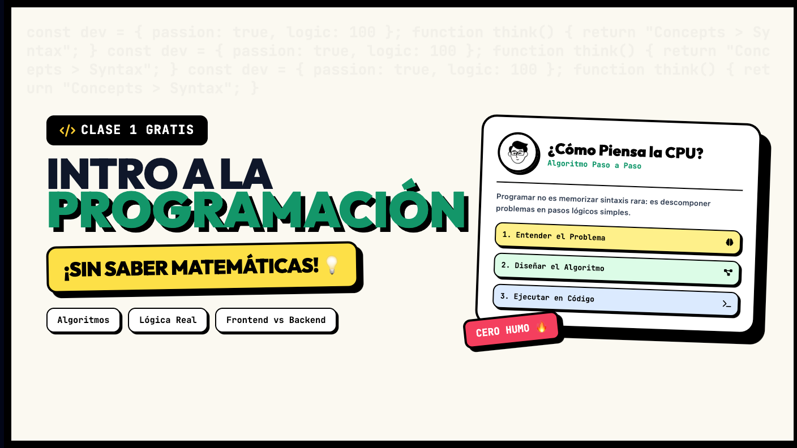

1

Ver Clase en YouTube
DISPONIBLE
Clase 1 · 1h 16m
Introducción a la Programación
Descifrando el mundo digital. Qué es la programación, algoritmos cotidianos, qué es el código real y desmitificación de mitos lógicos. Frontend vs. Backend al descubierto.